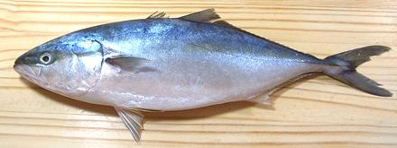

Japanese Amberjack / Hamachi

[Seriola quinqueradiata | similar: Yellowtail Amberjack;
Seriola lalandi]
The Japanese Amberjack is called Hamachi when it has grown to
about 6 pounds, and Buri when it has reached 10 pounds, but it
can grow to about 5 feet and 80 pounds. The photo specimen was 19 inches
long and weighed 3 pounds 2 ounces. This fish is most common along
the coasts of Japan and Korea, but is sometimes found as far east as
Hawaii and Baja California, Mexico. It is very popular in Japan, eaten
both raw and cooked particularly in winter when it is fattier. It is
now extensively farmed, but this is done done by capturing juveniles in
the wild, not an ecologically ideal method.
More on Jacks and Trevally.
This fish is very like the
Yellowtail Amberjack but doesn't grow as large and has a much
more restricted range. They can usually be told apart by coloration,
but definitively, the upper jaw of the Japanese is very squared off
right under the eye, whereas on Yellowtail it is more rounded.
Flesh of this fish is medium in color, with a deep strip of very
dark meat down the centerline, but this dark meat doesn't differ
greatly from the lighter flesh in taste or oiliness. It's not a fish
for those who want "fish lite", but is highly prized by those who
actually like fish.
While raw Hamachi is very popular in sushi bars, it is also
very fine cooked. The flesh becomes quite firm when baked, steamed
or poached, but is easily broken into large flakes. It holds together
well enough for fish stews.
Buying:
I have found these in Philippine and Asian
markets here in Los Angeles, California. In season they can be quite
economical. I bought the photo specimen, and a couple more, for
US $1.99/pound. These markets also often have California Yellowtail
Amberjacks, which are pretty much interchangeable with the Japanese,
except a whole lot larger.
Scales:
These are tiny and easy to scrape off with only
moderate flying around.
Cleaning:
The main problem here is size. There are
a lot of membranes and such that are not easy to pull out without
using your long nose pliers. Be sure to scrape through the long swim
bladder and scrape off the blood works above it. Use kitchen shears
to cut both ends of the gills to make them easier to pull out.
Filleting:
This fish is very easy to fillet. When you
get down to the rib cage don't bother trying to follow the bones with
your knife. Just use kitchen shears to cut the ribs from the backbone
and pull them from the fillets with your long nose pliers. They pull
easily and take almost no flesh. The skirt is thick and meaty on these
fish.
There are substantial centerline spines for the front half of the
fish. They are easy to find - just pull them out straight forward.
Yield:
A 3 pound 2 ounce fish yielded 1 pound 13-3/8
ounces of skin-on fillet (59%) and 1 pound 10-1/2 ounces skin-off (53%).
This fish can be used skin on.
Skin:
The skin has very little shrink when fried or
poached. The flavor is a little oilier than that of the flesh, but not
unpleasantly so. Cubes cut for stew can be left skin-on. For Baking or
steaming a full fillet, you should make a few diagonal cuts just through
the skin for better appearance. Skinning fillets is quite easy, but for
so large a fish it is best to split them along the centerline, even if
your knife is long enough for the full width.
Stock:
The head, bones and fins make a very
serviceable nearly clear stock of medium flavor. There is a fair
amount of oil which should be removed before us (use your gravy
separator). For details see our
Fish Stock page.
sf_jackjaz 130407 - www.clovegarden.com
©Andrew Grygus - agryg@clovegarden.com - Photos
on this page not otherwise credited © cg1
- Linking to and non-commercial use of this page permitted